2025 Higher Chemistry - Paper 2 questions
Source: Scottish Qualifications Authority (SQA) / Qualifications Scotland. This is a StemInteract HTML companion, not an official HTML edition. Selectable text is supplied alongside original page images. Use the images or original PDF for equations, powers, fractions, vector notation, tables and diagrams; text extraction cannot fully preserve mathematical layout.
Jump to a question
PDF page 1
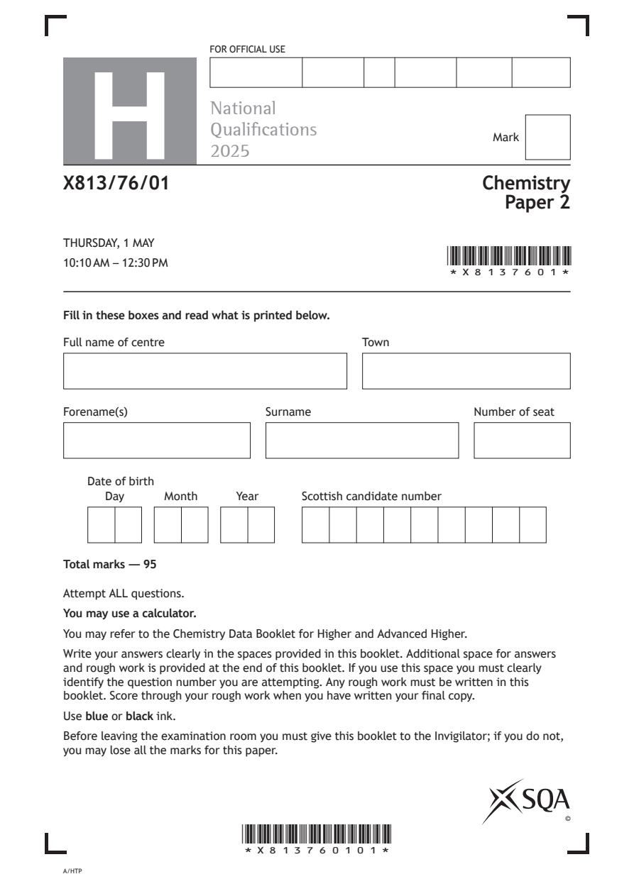
Selectable page text
FOR OFFICIAL USE
H
National
Qualications
Mark
2025
X813/76/01 Chemistry
Paper 2
THURSDAY, 1 MAY
10:10 AM – 12:30 PM
*X8137601*
Fill in these boxes and read what is printed below.
Full name of centre Town
Forename(s) Surname Number of seat
Date of birth
Day Month Year Scottish candidate number
Total marks — 95
Attempt ALL questions.
You may use a calculator.
You may refer to the Chemistry Data Booklet for Higher and Advanced Higher.
Write your answers clearly in the spaces provided in this booklet. Additional space for answers
and rough work is provided at the end of this booklet. If you use this space you must clearly
identify the question number you are attempting. Any rough work must be written in this
booklet. Score through your rough work when you have written your final copy.
Use blue or black ink.
Before leaving the examination room you must give this booklet to the Invigilator; if you do not,
you may lose all the marks for this paper.
©
*X813760101*
A/HTPPDF page 2
Paper 2, Question 1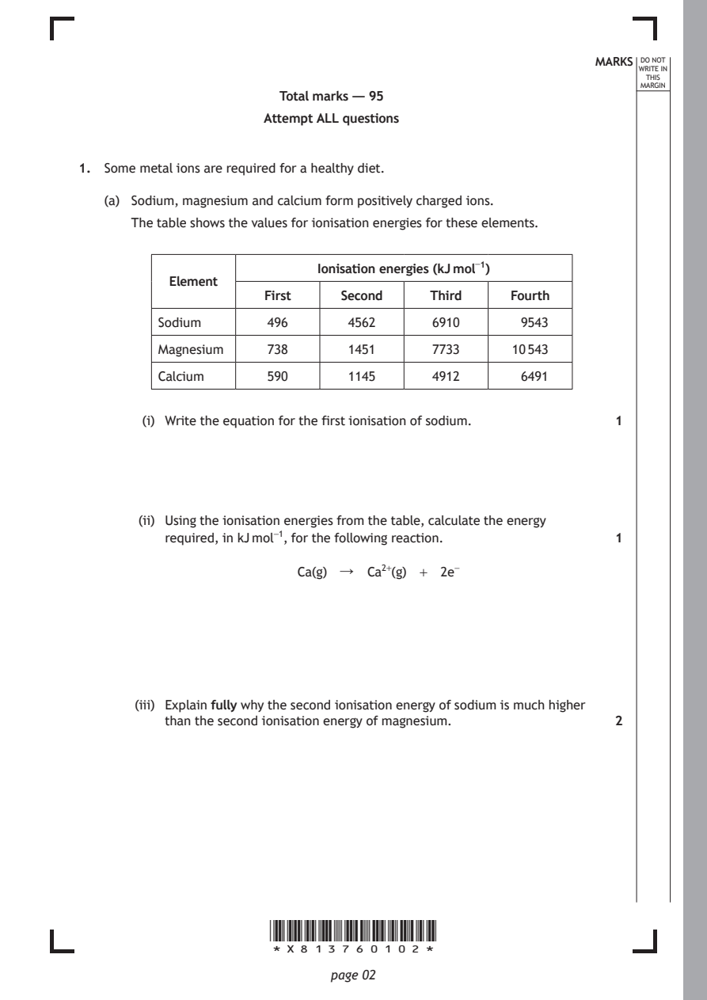
Selectable page text
MARKS _{W}^{D}_{R}^{O}_{I} _{T}^{N}OT
E IN
THIS
MARGIN
Total marks — 95
Attempt ALL questions
1. Some metal ions are required for a healthy diet.
(a) Sodium, magnesium and calcium form positively charged ions.
The table shows the values for ionisation energies for these elements.
Ionisation energies (kJ mol⁻¹)
Element
First Second Third Fourth
Sodium 496 4562 6910 9543
Magnesium 738 1451 7733 10 543
Calcium 590 1145 4912 6491
(i) Write the equation for the first ionisation of sodium. 1
(ii) Using the ionisation energies from the table, calculate the energy
required, in kJ mol⁻¹, for the following reaction. 1
Ca(g) ↓ Ca²⁺(g) + 2e⁻
(iii) Explain fully why the second ionisation energy of sodium is much higher
than the second ionisation energy of magnesium. 2
*X813760102*
page 02PDF page 3
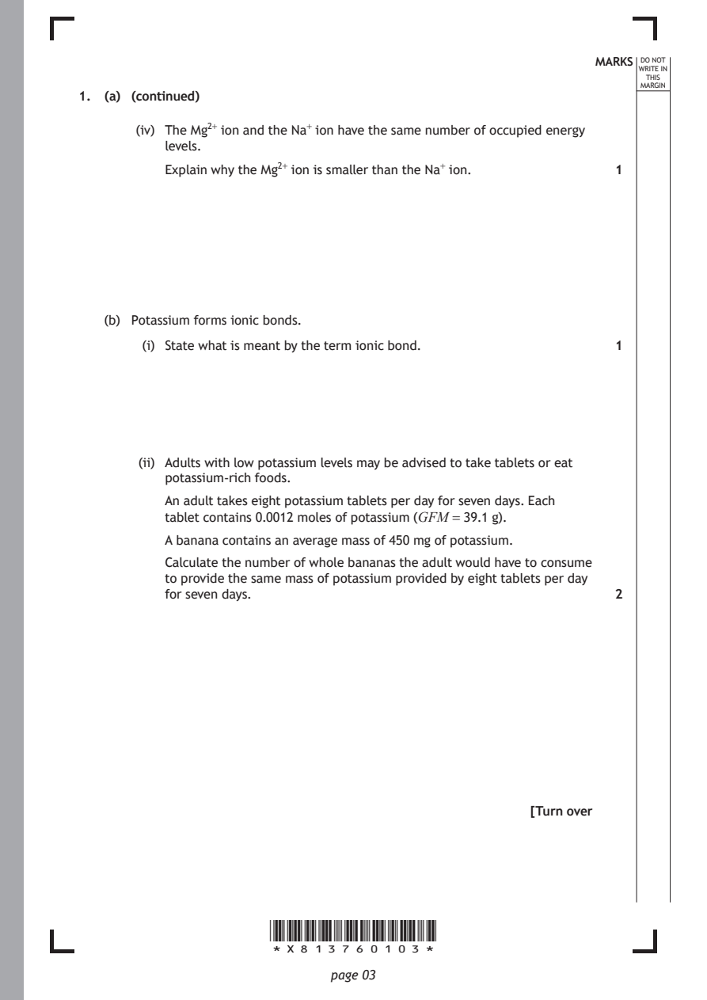
Selectable page text
MARKS _{W}^{D}_{R}^{O}_{I} _{T}^{N}OT
E IN
THIS
MARGIN
1. (a) (continued)
(iv) The Mg²⁺ ion and the Na⁺ ion have the same number of occupied energy
levels.
Explain why the Mg²⁺ ion is smaller than the Na⁺ ion. 1
(b) Potassium forms ionic bonds.
(i) State what is meant by the term ionic bond. 1
(ii) Adults with low potassium levels may be advised to take tablets or eat
potassium‑rich foods.
An adult takes eight potassium tablets per day for seven days. Each
tablet contains 0.0012 moles of potassium (GFM = 39.1 g).
A banana contains an average mass of 450 mg of potassium.
Calculate the number of whole bananas the adult would have to consume
to provide the same mass of potassium provided by eight tablets per day
for seven days. 2
[Turn over
*X813760103*
page 03PDF page 4
Paper 2, Question 2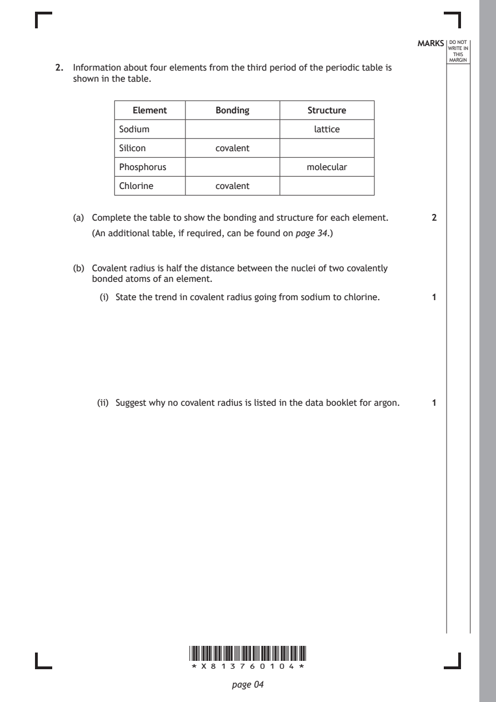
Selectable page text
MARKS _{W}^{D}_{R}^{O}_{I} _{T}^{N}OT
E IN
THIS
MARGIN
2. Information about four elements from the third period of the periodic table is
shown in the table.
Element Bonding Structure
Sodium lattice
Silicon covalent
Phosphorus molecular
Chlorine covalent
(a) Complete the table to show the bonding and structure for each element. 2
(An additional table, if required, can be found on page 34.)
(b) Covalent radius is half the distance between the nuclei of two covalently
bonded atoms of an element.
(i) State the trend in covalent radius going from sodium to chlorine. 1
(ii) Suggest why no covalent radius is listed in the data booklet for argon. 1
*X813760104*
page 04PDF page 5
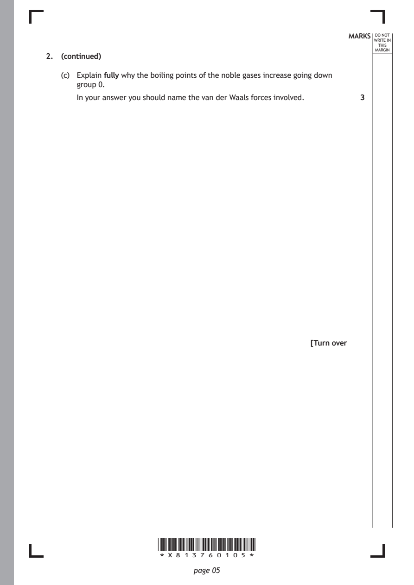
Selectable page text
MARKS _{W}^{D}_{R}^{O}_{I} _{T}^{N}OT
E IN
THIS
MARGIN
2. (continued)
(c) Explain fully why the boiling points of the noble gases increase going down
group 0.
In your answer you should name the van der Waals forces involved. 3
[Turn over
*X813760105*
page 05PDF page 6
Paper 2, Question 3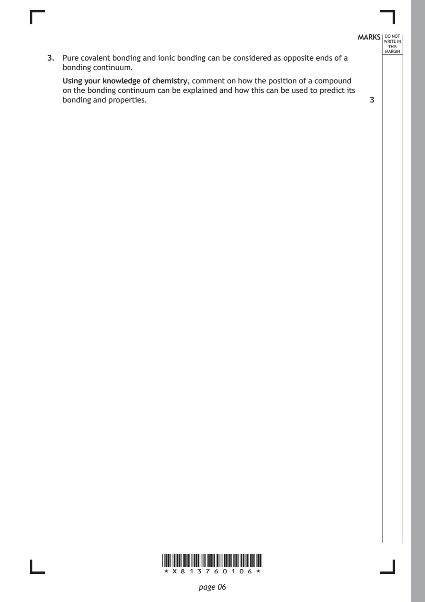
Selectable page text
MARKS _{W}^{D}_{R}^{O}_{I} _{T}^{N}OT
E IN
THIS
MARGIN
3. Pure covalent bonding and ionic bonding can be considered as opposite ends of a
bonding continuum.
Using your knowledge of chemistry, comment on how the position of a compound
on the bonding continuum can be explained and how this can be used to predict its
bonding and properties. 3
*X813760106*
page 06PDF page 7
Paper 2, Question 4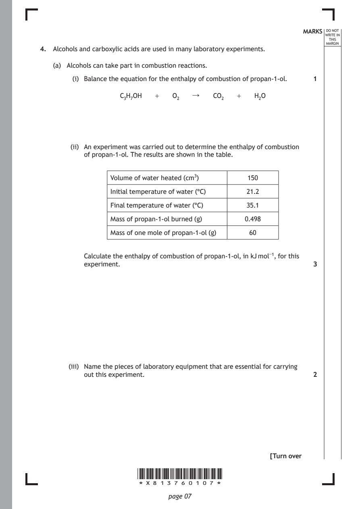
Selectable page text
MARKS _{W}^{D}_{R}^{O}_{I} _{T}^{N}OT
E IN
THIS
MARGIN
4. Alcohols and carboxylic acids are used in many laboratory experiments.
(a) Alcohols can take part in combustion reactions.
(i) Balance the equation for the enthalpy of combustion of propan‑1‑ol. 1
C₃H₇OH + O₂ ↓ CO₂ + H₂O
(ii) An experiment was carried out to determine the enthalpy of combustion
of propan‑1‑ol. The results are shown in the table.
Volume of water heated (cm³) 150
Initial temperature of water (°C) 21.2
Final temperature of water (°C) 35.1
Mass of propan‑1‑ol burned (g) 0.498
Mass of one mole of propan‑1‑ol (g) 60
Calculate the enthalpy of combustion of propan‑1‑ol, in kJ mol⁻¹, for this
experiment. 3
(iii) Name the pieces of laboratory equipment that are essential for carrying
out this experiment. 2
[Turn over
*X813760107*
page 07PDF page 8
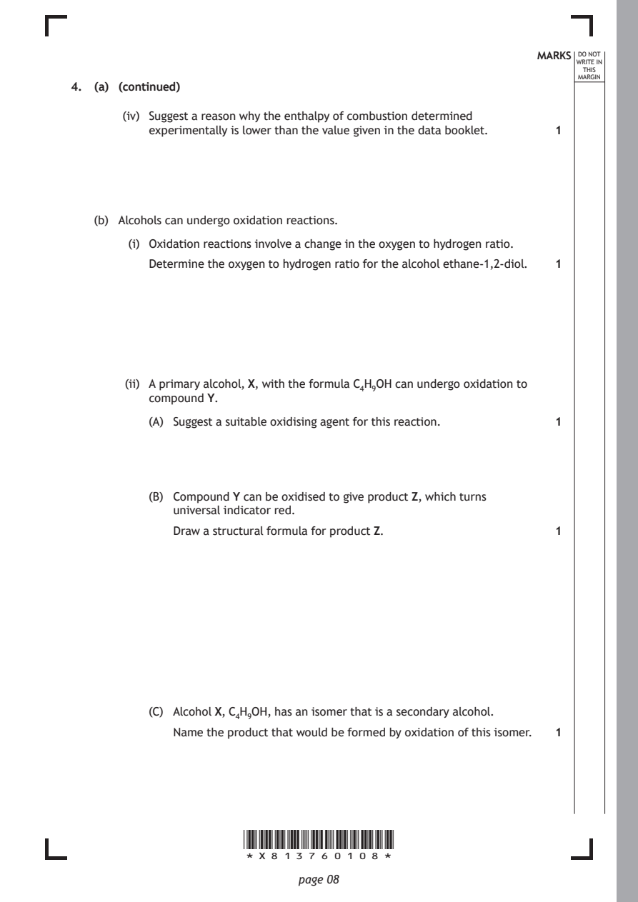
Selectable page text
MARKS _{W}^{D}_{R}^{O}_{I} _{T}^{N}OT
E IN
THIS
MARGIN
4. (a) (continued)
(iv) Suggest a reason why the enthalpy of combustion determined
experimentally is lower than the value given in the data booklet. 1
(b) Alcohols can undergo oxidation reactions.
(i) Oxidation reactions involve a change in the oxygen to hydrogen ratio.
Determine the oxygen to hydrogen ratio for the alcohol ethane‑1,2‑diol. 1
(ii) A primary alcohol, X, with the formula C₄H₉OH can undergo oxidation to
compound Y.
(A) Suggest a suitable oxidising agent for this reaction. 1
(B) Compound Y can be oxidised to give product Z, which turns
universal indicator red.
Draw a structural formula for product Z. 1
(C) Alcohol X, C₄H₉OH, has an isomer that is a secondary alcohol.
Name the product that would be formed by oxidation of this isomer. 1
*X813760108*
page 08PDF page 9
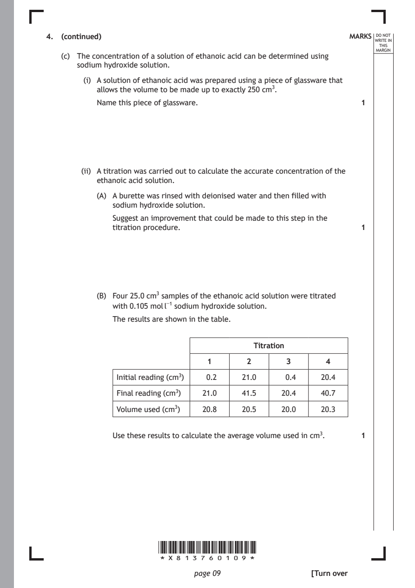
Selectable page text
4. (continued) MARKS _{W}^{D}_{R}^{O}_{I} _{T}^{N}OT
E IN
THIS
MARGIN
(c) The concentration of a solution of ethanoic acid can be determined using
sodium hydroxide solution.
(i) A solution of ethanoic acid was prepared using a piece of glassware that
allows the volume to be made up to exactly 250 cm³.
Name this piece of glassware. 1
(ii) A titration was carried out to calculate the accurate concentration of the
ethanoic acid solution.
(A) A burette was rinsed with deionised water and then filled with
sodium hydroxide solution.
Suggest an improvement that could be made to this step in the
titration procedure. 1
(B) Four 25.0 cm³ samples of the ethanoic acid solution were titrated
with 0.105 mol l⁻¹ sodium hydroxide solution.
The results are shown in the table.
Titration
1 2 3 4
Initial reading (cm³) 0.2 21.0 0.4 20.4
Final reading (cm³) 21.0 41.5 20.4 40.7
Volume used (cm³) 20.8 20.5 20.0 20.3
Use these results to calculate the average volume used in cm³. 1
*X813760109*
page 09 [Turn overPDF page 10
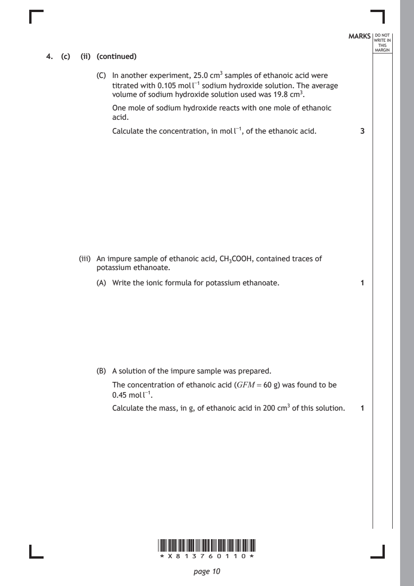
Selectable page text
MARKS _{W}^{D}_{R}^{O}_{I} _{T}^{N}OT
E IN
THIS
MARGIN
4. (c) (ii) (continued)
(C) In another experiment, 25.0 cm³ samples of ethanoic acid were
titrated with 0.105 mol l⁻¹ sodium hydroxide solution. The average
volume of sodium hydroxide solution used was 19.8 cm³.
One mole of sodium hydroxide reacts with one mole of ethanoic
acid.
Calculate the concentration, in mol l⁻¹, of the ethanoic acid. 3
(iii) An impure sample of ethanoic acid, CH₃COOH, contained traces of
potassium ethanoate.
(A) Write the ionic formula for potassium ethanoate. 1
(B) A solution of the impure sample was prepared.
The concentration of ethanoic acid (GFM = 60 g) was found to be
0.45 mol l⁻¹.
Calculate the mass, in g, of ethanoic acid in 200 cm³ of this solution. 1
*X813760110*
page 10PDF page 11
Paper 2, Question 5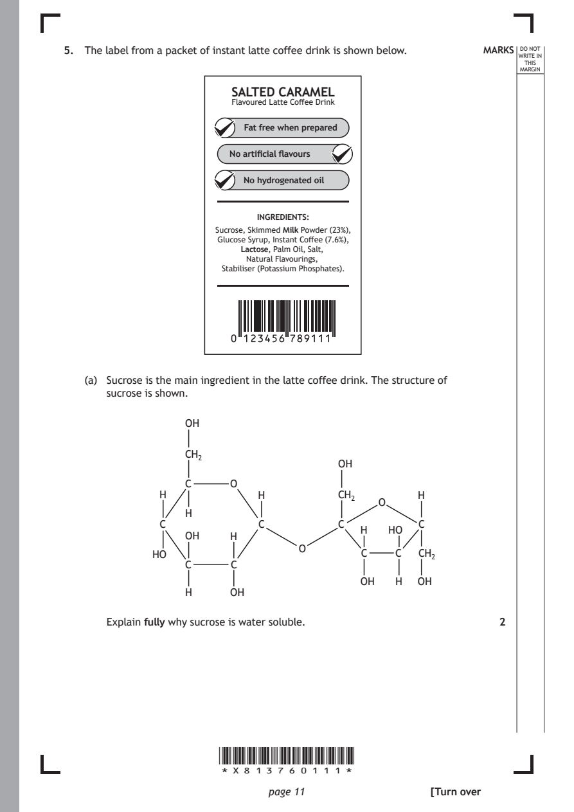
Selectable page text
5. The label from a packet of instant latte coffee drink is shown below. MARKS _{W}^{D}_{R}^{O}_{I} _{T}^{N}OT
E IN
THIS
MARGIN
SₐAᵥₒLᵤTᵣₑE_{d}D_{L}ₐ ₜCₜₑA_{C}Rₒ_{ff}AₑₑM_{D}ᵣEᵢₙLₖ
Fl
Fat free when prepared
No artificial flavours
No hydrogenated oil
INGREDIENTS:
Sucrose, Skimmed Milk Powder (23%),
Glucose Syrup, Instant Coffee (7.6%),
Lactose, Palm Oil, Salt,
Natural Flavourings,
Stabiliser (Potassium Phosphates).
(a) Sucrose is the main ingredient in the latte coffee drink. The structure of
sucrose is shown.
OH
CH₂
OH
C O
H H CH₂ H
O
H
C C C C
H HO
OH H
O
HO C C CH₂
C C
OH H OH
H OH
Explain fully why sucrose is water soluble. 2
*X813760111*
page 11 [Turn overPDF page 12
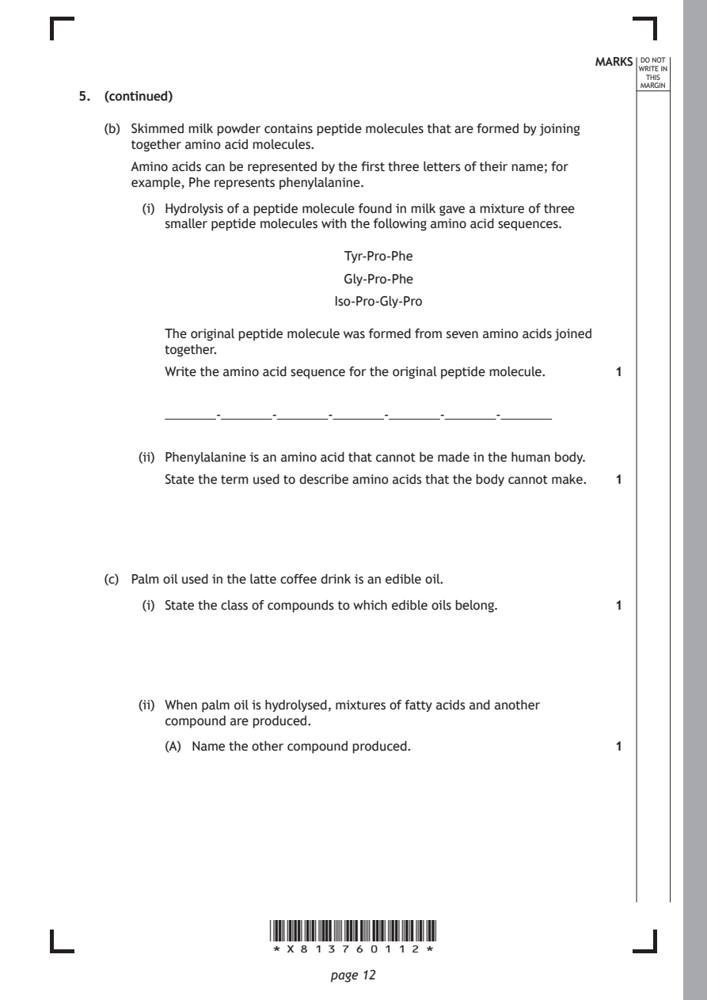
Selectable page text
MARKS _{W}^{D}_{R}^{O}_{I} _{T}^{N}OT
E IN
THIS
MARGIN
5. (continued)
(b) Skimmed milk powder contains peptide molecules that are formed by joining
together amino acid molecules.
Amino acids can be represented by the first three letters of their name; for
example, Phe represents phenylalanine.
(i) Hydrolysis of a peptide molecule found in milk gave a mixture of three
smaller peptide molecules with the following amino acid sequences.
Tyr‑Pro‑Phe
Gly‑Pro‑Phe
Iso‑Pro‑Gly‑Pro
The original peptide molecule was formed from seven amino acids joined
together.
Write the amino acid sequence for the original peptide molecule. 1
��������������‑��������������‑��������������‑��������������‑��������������‑��������������‑��������������
(ii) Phenylalanine is an amino acid that cannot be made in the human body.
State the term used to describe amino acids that the body cannot make. 1
(c) Palm oil used in the latte coffee drink is an edible oil.
(i) State the class of compounds to which edible oils belong. 1
(ii) When palm oil is hydrolysed, mixtures of fatty acids and another
compound are produced.
(A) Name the other compound produced. 1
*X813760112*
page 12PDF page 13
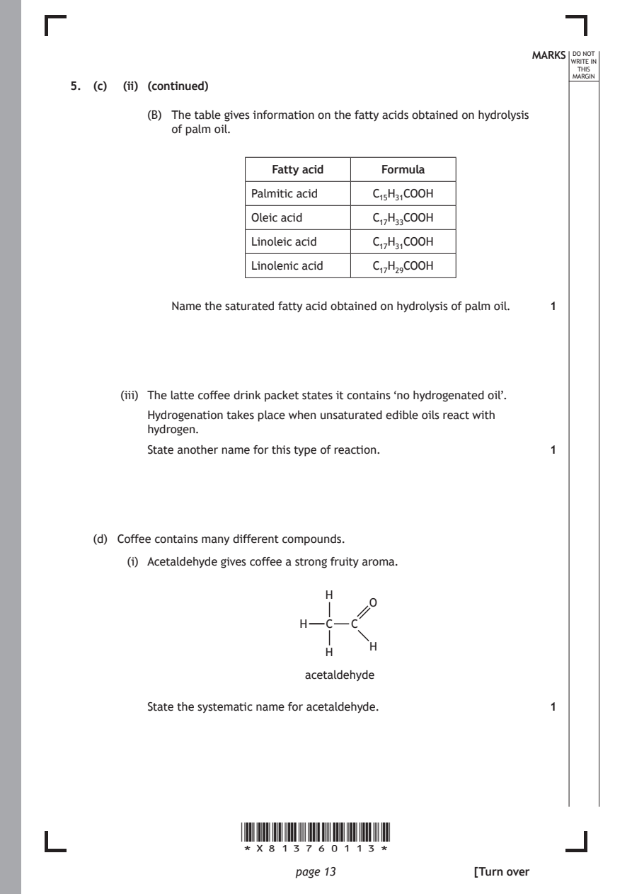
Selectable page text
MARKS _{W}^{D}_{R}^{O}_{I} _{T}^{N}OT
E IN
THIS
MARGIN
5. (c) (ii) (continued)
(B) The table gives information on the fatty acids obtained on hydrolysis
of palm oil.
Fatty acid Formula
Palmitic acid C₁₅H₃₁COOH
Oleic acid C₁₇H₃₃COOH
Linoleic acid C₁₇H₃₁COOH
Linolenic acid C₁₇H₂₉COOH
Name the saturated fatty acid obtained on hydrolysis of palm oil. 1
(iii) The latte coffee drink packet states it contains ‘no hydrogenated oil’.
Hydrogenation takes place when unsaturated edible oils react with
hydrogen.
State another name for this type of reaction. 1
(d) Coffee contains many different compounds.
(i) Acetaldehyde gives coffee a strong fruity aroma.
H
O
H C C
H
H
acetaldehyde
State the systematic name for acetaldehyde. 1
*X813760113*
page 13 [Turn overPDF page 14
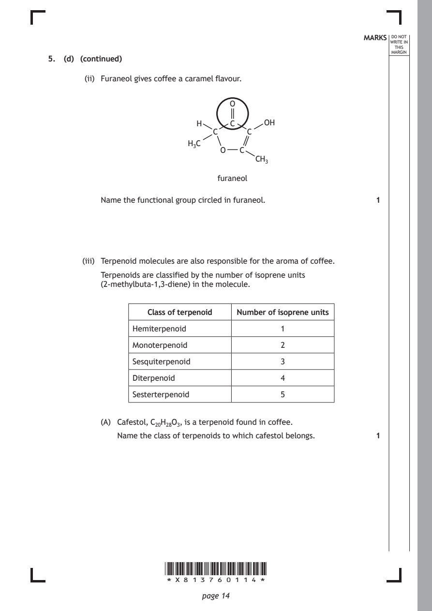
Selectable page text
MARKS _{W}^{D}_{R}^{O}_{I} _{T}^{N}OT
E IN
THIS
MARGIN
5. (d) (continued)
(ii) Furaneol gives coffee a caramel flavour.
O
H C OH
C C
H₃C
O C
CH₃
furaneol
Name the functional group circled in furaneol. 1
(iii) Terpenoid molecules are also responsible for the aroma of coffee.
Terpenoids are classified by the number of isoprene units
(2‑methylbuta‑1,3‑diene) in the molecule.
Class of terpenoid Number of isoprene units
Hemiterpenoid 1
Monoterpenoid 2
Sesquiterpenoid 3
Diterpenoid 4
Sesterterpenoid 5
(A) Cafestol, C₂₀H₂₈O₃, is a terpenoid found in coffee.
Name the class of terpenoids to which cafestol belongs. 1
*X813760114*
page 14PDF page 15
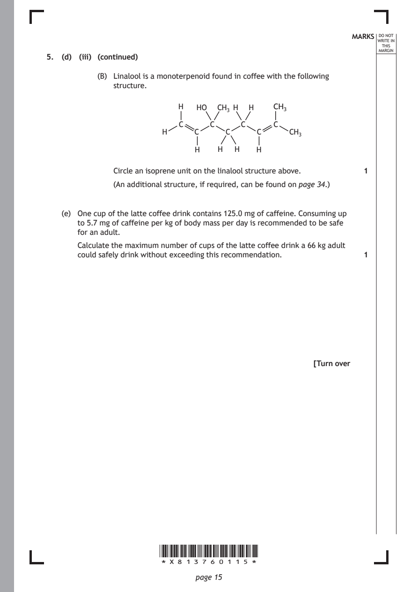
Selectable page text
MARKS _{W}^{D}_{R}^{O}_{I} _{T}^{N}OT
E IN
THIS
MARGIN
5. (d) (iii) (continued)
(B) Linalool is a monoterpenoid found in coffee with the following
structure.
CH₃
C C C C
C C C CH₃
*X813760115*
page 15
H
H H
H CH₃ H H H O
H H
Circle an isoprene unit on the linalool structure above. 1
(An additional structure, if required, can be found on page 34.)
(e) One cup of the latte coffee drink contains 125.0 mg of caffeine. Consuming up
to 5.7 mg of caffeine per kg of body mass per day is recommended to be safe
for an adult.
Calculate the maximum number of cups of the latte coffee drink a 66 kg adult
could safely drink without exceeding this recommendation. 1
[Turn overPDF page 16
Paper 2, Question 6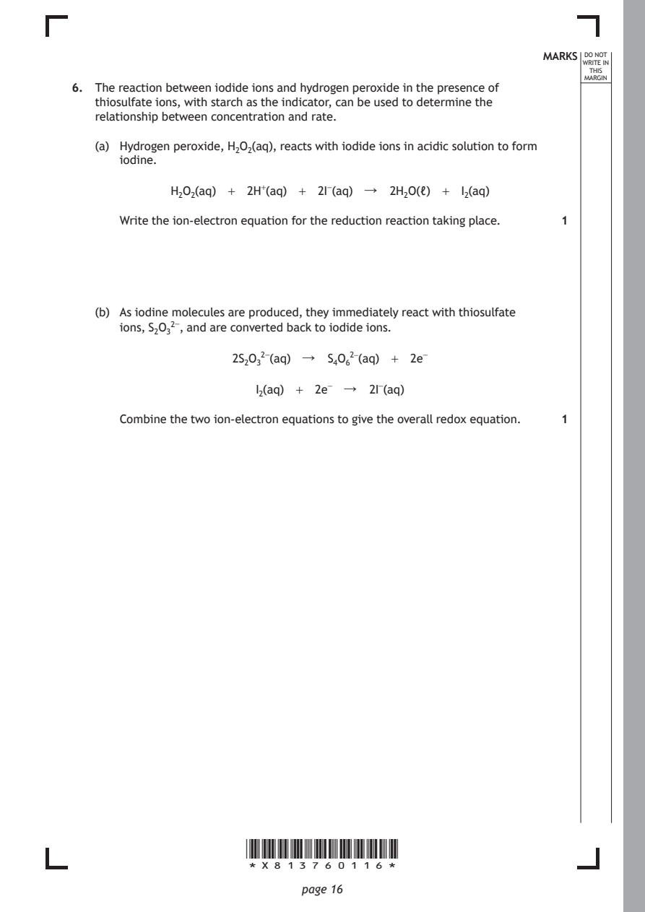
Selectable page text
MARKS _{W}^{D}_{R}^{O}_{I} _{T}^{N}OT
E IN
THIS
MARGIN
6. The reaction between iodide ions and hydrogen peroxide in the presence of
thiosulfate ions, with starch as the indicator, can be used to determine the
relationship between concentration and rate.
(a) Hydrogen peroxide, H₂O₂(aq), reacts with iodide ions in acidic solution to form
iodine.
H₂O₂(aq) + 2H⁺(aq) + 2I⁻(aq) ↓ 2H₂O(ℓ) + I₂(aq)
Write the ion‑electron equation for the reduction reaction taking place. 1
(b) As iodine molecules are produced, they immediately react with thiosulfate
ions, S₂O₃²⁻, and are converted back to iodide ions.
2S₂O₃²⁻(aq) ↓ S₄O₆²⁻(aq) + 2e⁻
I₂(aq) + 2e⁻ ↓ 2I⁻(aq)
Combine the two ion‑electron equations to give the overall redox equation. 1
*X813760116*
page 16PDF page 17
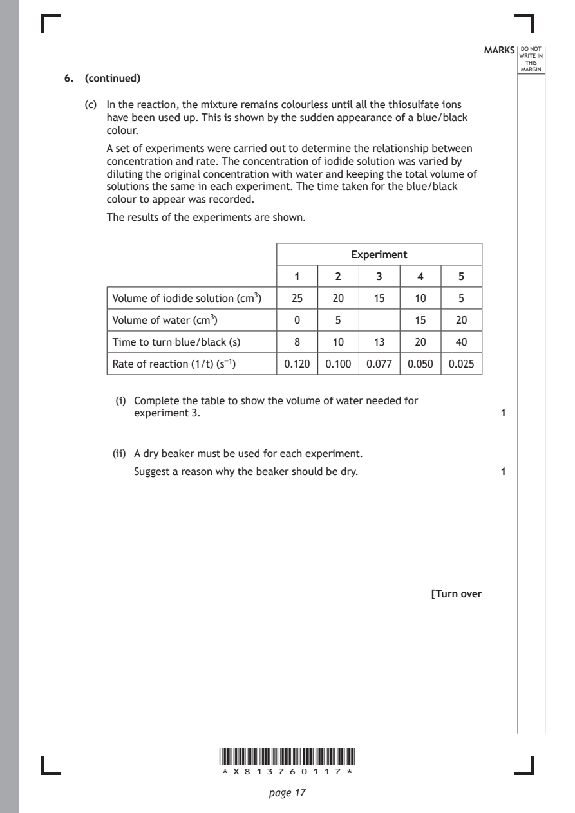
Selectable page text
MARKS _{W}^{D}_{R}^{O}_{I} _{T}^{N}OT
E IN
THIS
MARGIN
6. (continued)
(c) In the reaction, the mixture remains colourless until all the thiosulfate ions
have been used up. This is shown by the sudden appearance of a blue/black
colour.
A set of experiments were carried out to determine the relationship between
concentration and rate. The concentration of iodide solution was varied by
diluting the original concentration with water and keeping the total volume of
solutions the same in each experiment. The time taken for the blue/black
colour to appear was recorded.
The results of the experiments are shown.
Experiment
1 2 3 4 5
Volume of iodide solution (cm³) 25 20 15 10 5
Volume of water (cm³) 0 5 15 20
Time to turn blue/black (s) 8 10 13 20 40
Rate of reaction (1/t) (s⁻¹) 0.120 0.100 0.077 0.050 0.025
(i) Complete the table to show the volume of water needed for
experiment 3. 1
(ii) A dry beaker must be used for each experiment.
Suggest a reason why the beaker should be dry. 1
[Turn over
*X813760117*
page 17PDF page 18
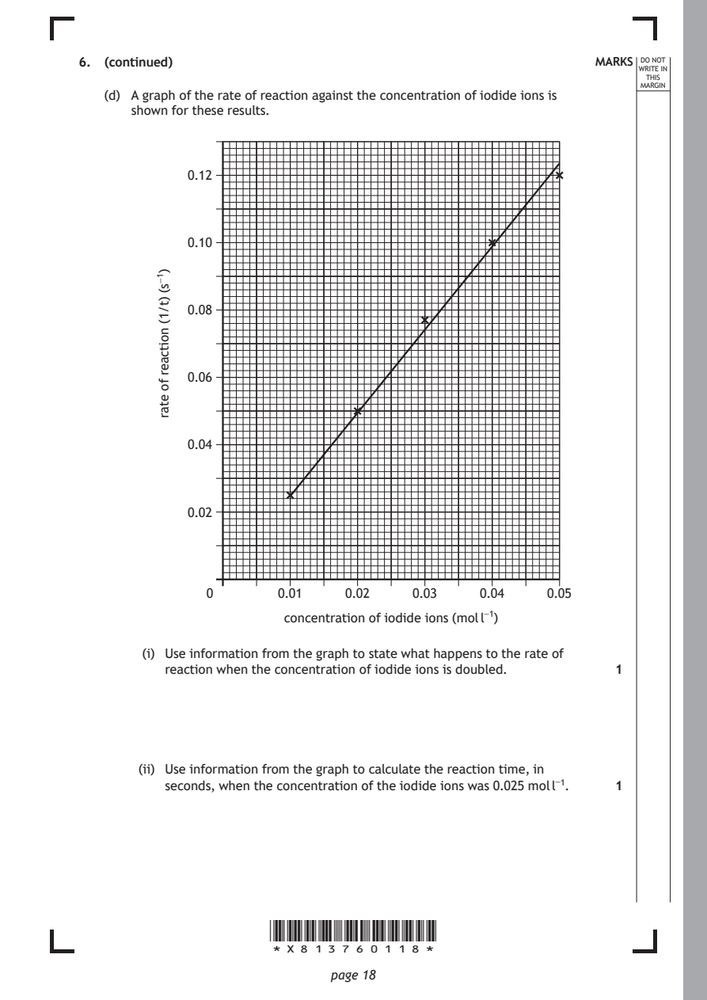
Selectable page text
6. (continued) MARKS _{W}^{D}_{R}^{O}_{I} _{T}^{N}OT
E IN
THIS
MARGIN
(d) A graph of the rate of reaction against the concentration of iodide ions is
shown for these results.
0.12
0.10
0.08
0.06
0.04
0.02
0 0.01 0.02 0.03 0.04 0.05
concentration of iodide ions (mol l⁻¹)
*X813760118*
page 18
)1−s(
)t/1(
noitcaer
fo
etar
(i) Use information from the graph to state what happens to the rate of
reaction when the concentration of iodide ions is doubled. 1
(ii) Use information from the graph to calculate the reaction time, in
seconds, when the concentration of the iodide ions was 0.025 mol l⁻¹. 1PDF page 19
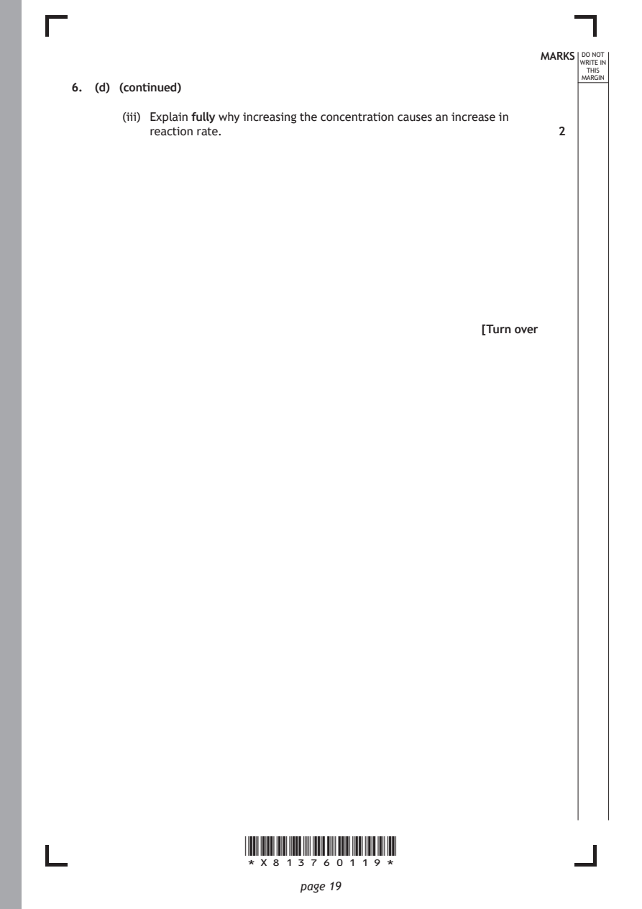
Selectable page text
MARKS _{W}^{D}_{R}^{O}_{I} _{T}^{N}OT
E IN
THIS
MARGIN
6. (d) (continued)
(iii) Explain fully why increasing the concentration causes an increase in
reaction rate. 2
[Turn over
*X813760119*
page 19PDF page 20
Paper 2, Question 7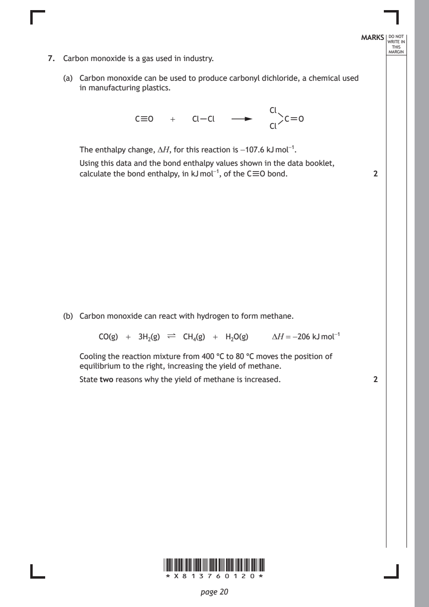
Selectable page text
MARKS _{W}^{D}_{R}^{O}_{I} _{T}^{N}OT
E IN
THIS
MARGIN
7. Carbon monoxide is a gas used in industry.
(a) Carbon monoxide can be used to produce carbonyl dichloride, a chemical used
in manufacturing plastics.
Cl
C O + Cl Cl C O
Cl
The enthalpy change, ∆H, for this reaction is −107.6 kJ mol⁻¹.
Using this data and the bond enthalpy values shown in the data booklet,
calculate the bond enthalpy, in kJ mol⁻¹, of the C O bond. 2
(b) Carbon monoxide can react with hydrogen to form methane.
CO(g) + 3H₂(g) ∏ CH₄(g) + H₂O(g) ∆H = −206 kJ mol⁻¹
Cooling the reaction mixture from 400 °C to 80 °C moves the position of
equilibrium to the right, increasing the yield of methane.
State two reasons why the yield of methane is increased. 2
*X813760120*
page 20PDF page 21
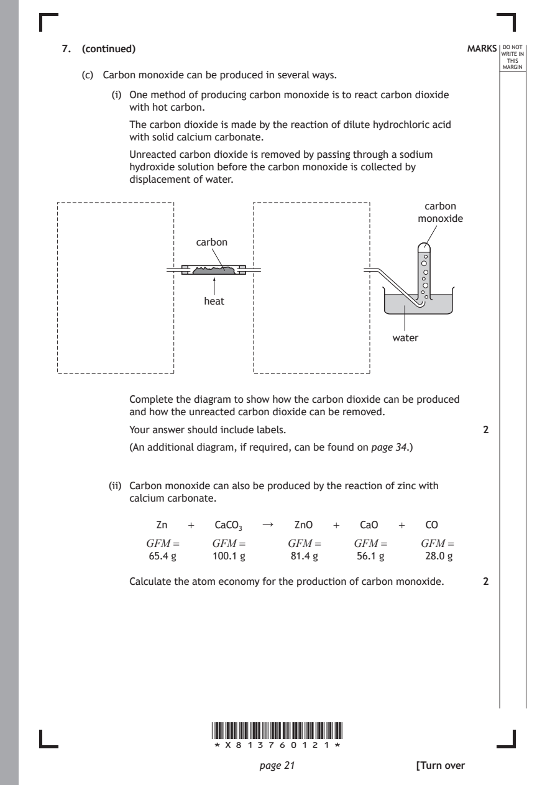
Selectable page text
7. (continued) MARKS _{W}^{D}_{R}^{O}_{I} _{T}^{N}OT
E IN
THIS
MARGIN
(c) Carbon monoxide can be produced in several ways.
(i) One method of producing carbon monoxide is to react carbon dioxide
with hot carbon.
The carbon dioxide is made by the reaction of dilute hydrochloric acid
with solid calcium carbonate.
Unreacted carbon dioxide is removed by passing through a sodium
hydroxide solution before the carbon monoxide is collected by
displacement of water.
carbon
monoxide
carbon
heat
water
Complete the diagram to show how the carbon dioxide can be produced
and how the unreacted carbon dioxide can be removed.
Your answer should include labels. 2
(An additional diagram, if required, can be found on page 34.)
(ii) Carbon monoxide can also be produced by the reaction of zinc with
calcium carbonate.
Zn + CaCO₃ ↓ ZnO + CaO + CO
GFM = GFM = GFM = GFM = GFM =
65.4 g 100.1 g 81.4 g 56.1 g 28.0 g
Calculate the atom economy for the production of carbon monoxide. 2
*X813760121*
page 21 [Turn overPDF page 22
Paper 2, Question 8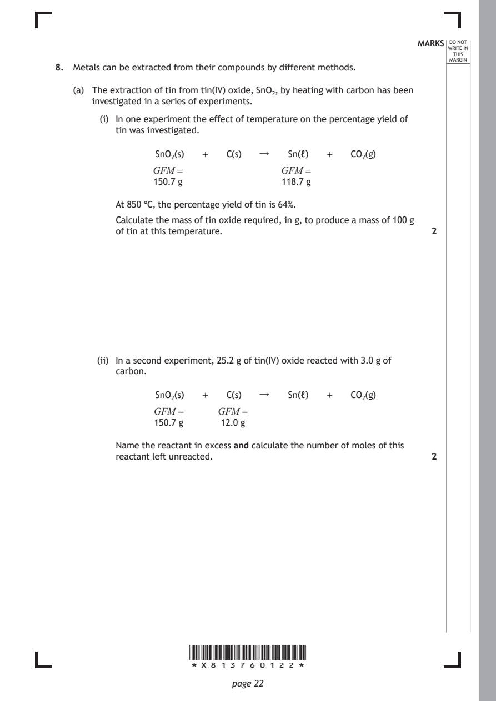
Selectable page text
MARKS _{W}^{D}_{R}^{O}_{I} _{T}^{N}OT
E IN
THIS
MARGIN
8. Metals can be extracted from their compounds by different methods.
(a) The extraction of tin from tin(IV) oxide, SnO₂, by heating with carbon has been
investigated in a series of experiments.
(i) In one experiment the effect of temperature on the percentage yield of
tin was investigated.
SnO₂(s) + C(s) ↓ Sn(ℓ) + CO₂(g)
GFM = GFM =
150.7 g 118.7 g
At 850 °C, the percentage yield of tin is 64%.
Calculate the mass of tin oxide required, in g, to produce a mass of 100 g
of tin at this temperature. 2
(ii) In a second experiment, 25.2 g of tin(IV) oxide reacted with 3.0 g of
carbon.
SnO₂(s) + C(s) ↓ Sn(ℓ) + CO₂(g)
GFM = GFM =
150.7 g 12.0 g
Name the reactant in excess and calculate the number of moles of this
reactant left unreacted. 2
*X813760122*
page 22PDF page 23
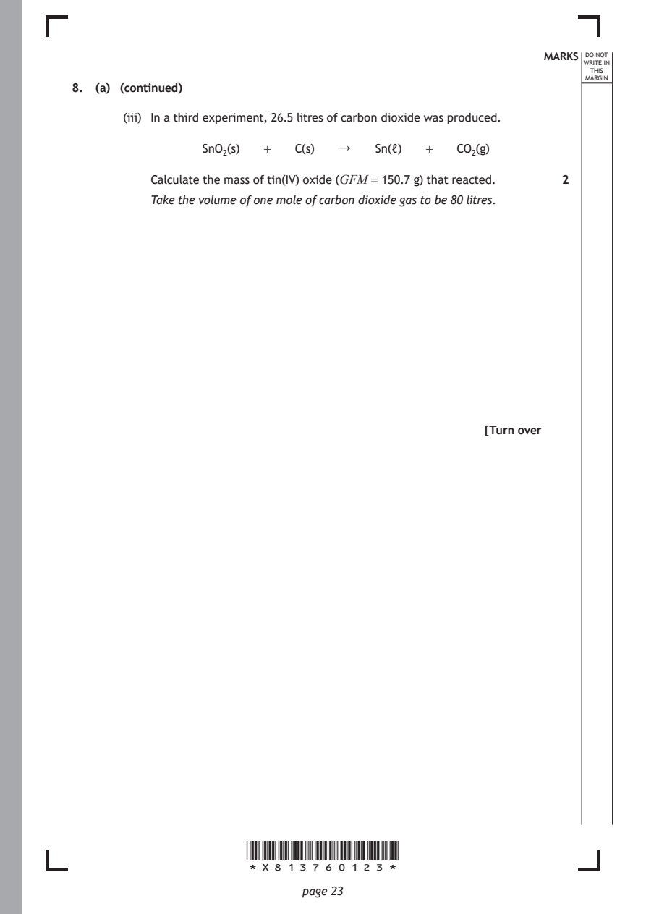
Selectable page text
MARKS _{W}^{D}_{R}^{O}_{I} _{T}^{N}OT
E IN
THIS
MARGIN
8. (a) (continued)
(iii) In a third experiment, 26.5 litres of carbon dioxide was produced.
SnO₂(s) + C(s) ↓ Sn(ℓ) + CO₂(g)
Calculate the mass of tin(IV) oxide (GFM = 150.7 g) that reacted. 2
Take the volume of one mole of carbon dioxide gas to be 80 litres.
[Turn over
*X813760123*
page 23PDF page 24
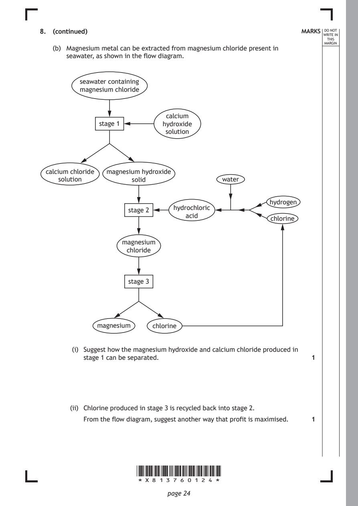
Selectable page text
8. (continued) MARKS _{W}^{D}_{R}^{O}_{I} _{T}^{N}OT
E IN
THIS
MARGIN
(b) Magnesium metal can be extracted from magnesium chloride present in
seawater, as shown in the flow diagram.
seawater containing
magnesium chloride
calcium
stage 1 hydroxide
solution
calcium chloride magnesium hydroxide
solution solid water
hydrogen
hydrochloric
stage 2
acid
chlorine
magnesium
chloride
stage 3
magnesium chlorine
(i) Suggest how the magnesium hydroxide and calcium chloride produced in
stage 1 can be separated. 1
(ii) Chlorine produced in stage 3 is recycled back into stage 2.
From the flow diagram, suggest another way that profit is maximised. 1
*X813760124*
page 24PDF page 25
Paper 2, Question 9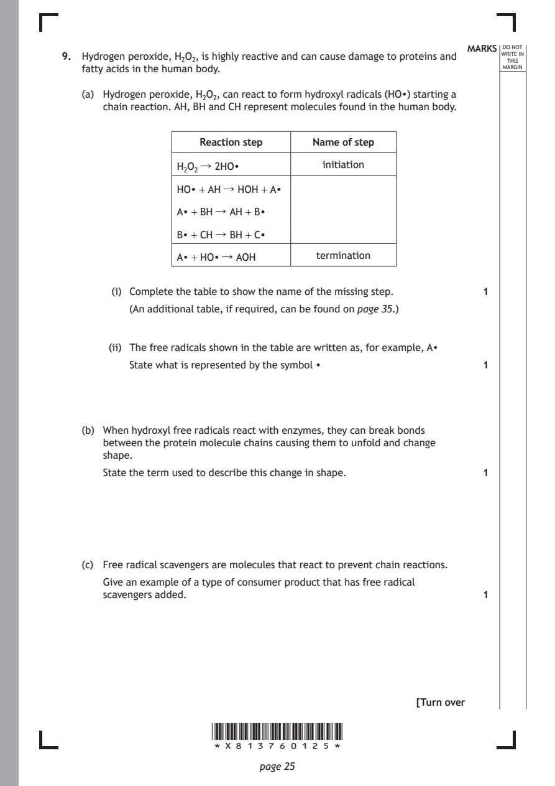
Selectable page text
MARKS _{W}^{D}_{R}^{O}_{I} _{T}^{N}OT
9. Hydrogen peroxide, H₂O₂, is highly reactive and can cause damage to proteins and E IN
THIS
fatty acids in the human body. MARGIN
(a) Hydrogen peroxide, H₂O₂, can react to form hydroxyl radicals (HO•) starting a
chain reaction. AH, BH and CH represent molecules found in the human body.
Reaction step Name of step
H₂O₂ ↓ 2HO• initiation
HO• + AH ↓ HOH + A•
A• + BH ↓ AH + B•
B• + CH ↓ BH + C•
A• + HO• ↓ AOH termination
(i) Complete the table to show the name of the missing step. 1
(An additional table, if required, can be found on page 35.)
(ii) The free radicals shown in the table are written as, for example, A•
State what is represented by the symbol • 1
(b) When hydroxyl free radicals react with enzymes, they can break bonds
between the protein molecule chains causing them to unfold and change
shape.
State the term used to describe this change in shape. 1
(c) Free radical scavengers are molecules that react to prevent chain reactions.
Give an example of a type of consumer product that has free radical
scavengers added. 1
[Turn over
*X813760125*
page 25PDF page 26
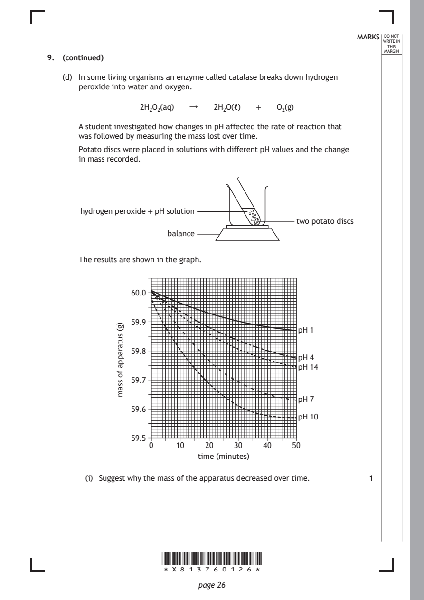
Selectable page text
MARKS _{W}^{D}_{R}^{O}_{I} _{T}^{N}OT
E IN
THIS
MARGIN
9. (continued)
(d) In some living organisms an enzyme called catalase breaks down hydrogen
peroxide into water and oxygen.
2H₂O₂(aq) ↓ 2H₂O(ℓ) + O₂(g)
A student investigated how changes in pH affected the rate of reaction that
was followed by measuring the mass lost over time.
Potato discs were placed in solutions with different pH values and the change
in mass recorded.
hydrogen peroxide + pH solution
two potato discs
balance
The results are shown in the graph.
60.0
59.9
pH 1
59.8
pH 4
pH 14
59.7
pH 7
59.6
pH 10
59.5
0 10 20 30 40 50
*X813760126*
page 26
)g(
sutarappa
fo
ssam
time (minutes)
(i) Suggest why the mass of the apparatus decreased over time. 1PDF page 27
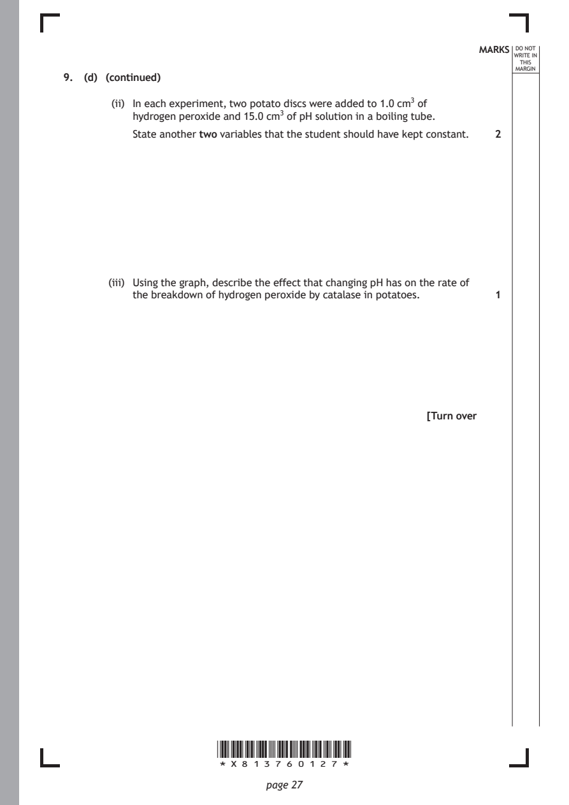
Selectable page text
MARKS _{W}^{D}_{R}^{O}_{I} _{T}^{N}OT
E IN
THIS
MARGIN
9. (d) (continued)
(ii) In each experiment, two potato discs were added to 1.0 cm³ of
hydrogen peroxide and 15.0 cm³ of pH solution in a boiling tube.
State another two variables that the student should have kept constant. 2
(iii) Using the graph, describe the effect that changing pH has on the rate of
the breakdown of hydrogen peroxide by catalase in potatoes. 1
[Turn over
*X813760127*
page 27PDF page 28
Paper 2, Question 10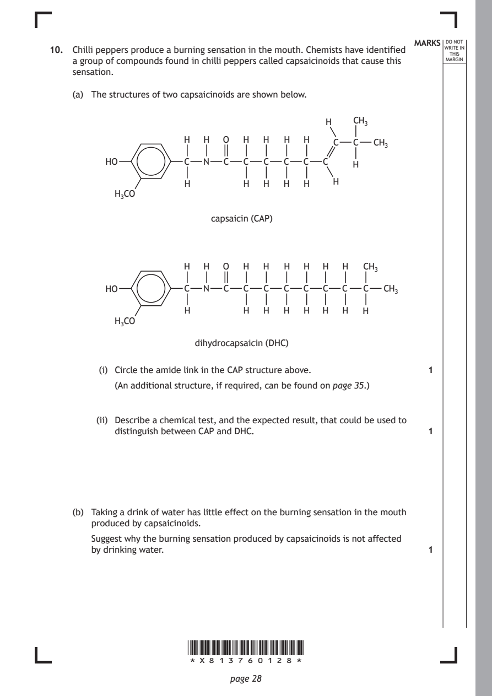
Selectable page text
MARKS _{W}^{D}_{R}^{O}_{I} _{T}^{N}OT
10. Chilli peppers produce a burning sensation in the mouth. Chemists have identified E IN
THIS
a group of compounds found in chilli peppers called capsaicinoids that cause this MARGIN
sensation.
(a) The structures of two capsaicinoids are shown below.
H CH₃
H H O H H H H
C C CH₃
HO C N C C C C C C
H
H H H H H H
H₃CO
capsaicin (CAP)
H H O H H H H H H CH₃
HO C N C C C C C C C C CH₃
H H H H H H H H
H₃CO
dihydrocapsaicin (DHC)
(i) Circle the amide link in the CAP structure above. 1
(An additional structure, if required, can be found on page 35.)
(ii) Describe a chemical test, and the expected result, that could be used to
distinguish between CAP and DHC. 1
(b) Taking a drink of water has little effect on the burning sensation in the mouth
produced by capsaicinoids.
Suggest why the burning sensation produced by capsaicinoids is not affected
by drinking water. 1
*X813760128*
page 28PDF page 29
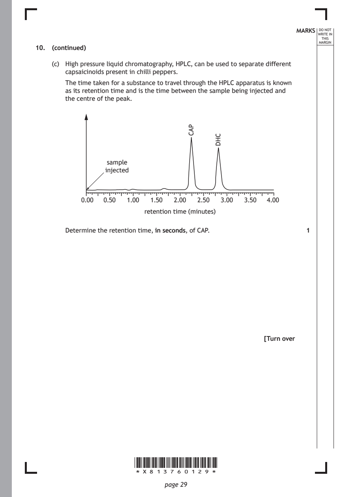
Selectable page text
MARKS _{W}^{D}_{R}^{O}_{I} _{T}^{N}OT
E IN
THIS
MARGIN
10. (continued)
(c) High pressure liquid chromatography, HPLC, can be used to separate different
capsaicinoids present in chilli peppers.
The time taken for a substance to travel through the HPLC apparatus is known
as its retention time and is the time between the sample being injected and
the centre of the peak.
0.00 0.50 1.00 1.50 2.00 2.50 3.00 3.50 4.00
retention time (minutes)
*X813760129*
page 29
PAC
CHD
sample
injected
Determine the retention time, in seconds, of CAP. 1
[Turn overPDF page 30
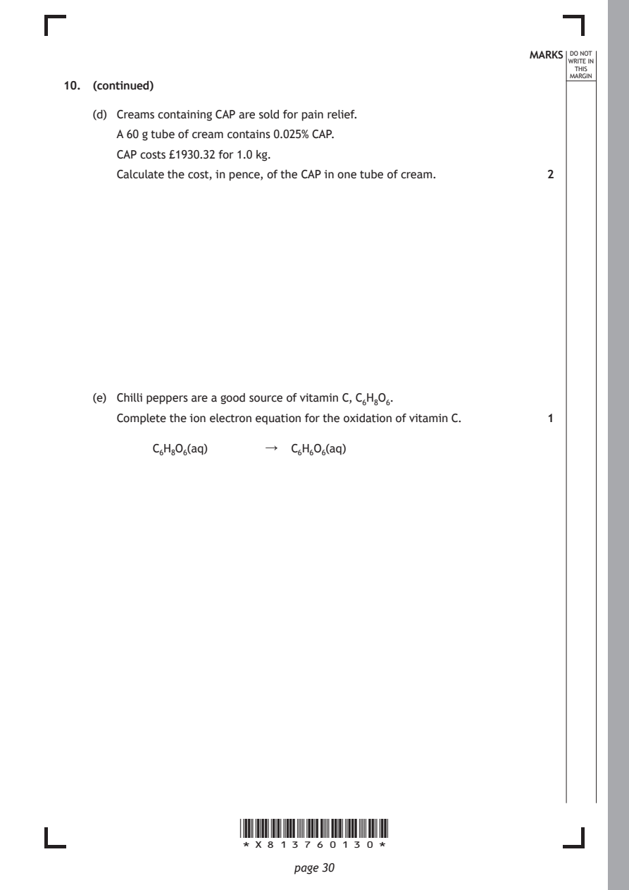
Selectable page text
MARKS _{W}^{D}_{R}^{O}_{I} _{T}^{N}OT
E IN
THIS
MARGIN
10. (continued)
(d) Creams containing CAP are sold for pain relief.
A 60 g tube of cream contains 0.025% CAP.
CAP costs £1930.32 for 1.0 kg.
Calculate the cost, in pence, of the CAP in one tube of cream. 2
(e) Chilli peppers are a good source of vitamin C, C₆H₈O₆.
Complete the ion electron equation for the oxidation of vitamin C. 1
C₆H₈O₆(aq) ↓ C₆H₆O₆(aq)
*X813760130*
page 30PDF page 31
Paper 2, Question 11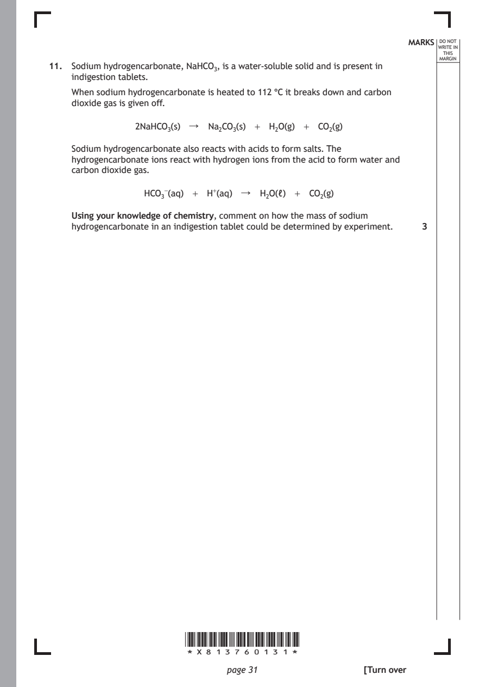
Selectable page text
MARKS _{W}^{D}_{R}^{O}_{I} _{T}^{N}OT
E IN
THIS
MARGIN
11. Sodium hydrogencarbonate, NaHCO₃, is a water‑soluble solid and is present in
indigestion tablets.
When sodium hydrogencarbonate is heated to 112 °C it breaks down and carbon
dioxide gas is given off.
2NaHCO₃(s) ↓ Na₂CO₃(s) + H₂O(g) + CO₂(g)
Sodium hydrogencarbonate also reacts with acids to form salts. The
hydrogencarbonate ions react with hydrogen ions from the acid to form water and
carbon dioxide gas.
HCO₃⁻(aq) + H⁺(aq) ↓ H₂O(ℓ) + CO₂(g)
Using your knowledge of chemistry, comment on how the mass of sodium
hydrogencarbonate in an indigestion tablet could be determined by experiment. 3
*X813760131*
page 31 [Turn overPDF page 32
Paper 2, Question 12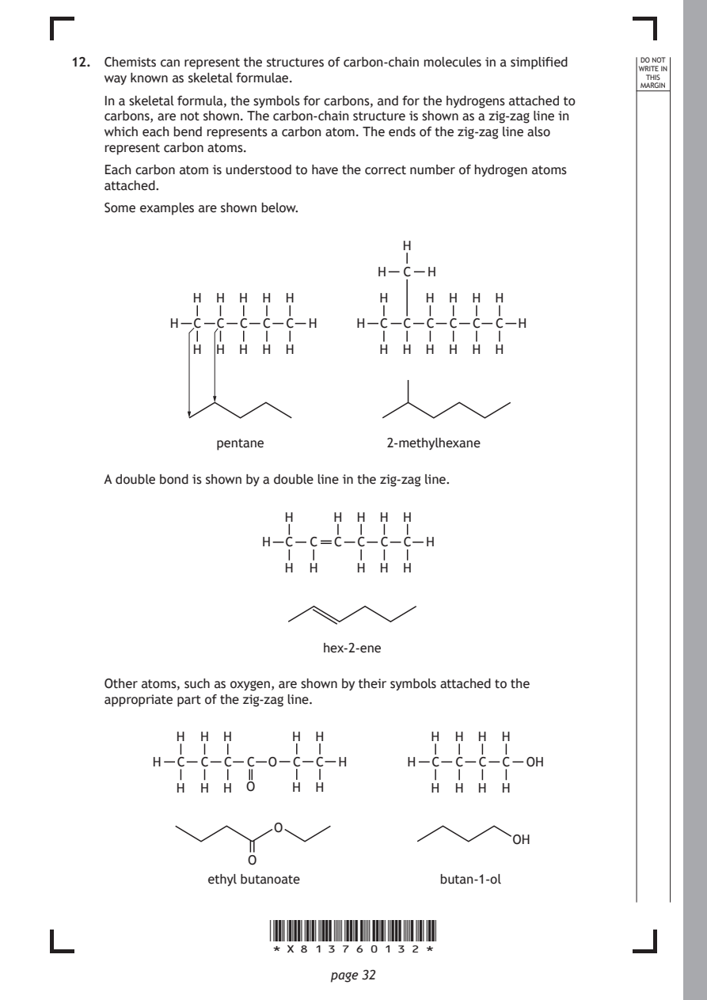
Selectable page text
12. Chemists can represent the structures of carbon‑chain molecules in a simplified DO NOT
WRITE IN
way known as skeletal formulae. THIS
MARGIN
In a skeletal formula, the symbols for carbons, and for the hydrogens attached to
carbons, are not shown. The carbon‑chain structure is shown as a zig‑zag line in
which each bend represents a carbon atom. The ends of the zig‑zag line also
represent carbon atoms.
Each carbon atom is understood to have the correct number of hydrogen atoms
attached.
Some examples are shown below.
H
H C H
H H H H H H H H H H
H C C C C C H H C C C C C C H
H H H H H H H H H H H
pentane 2-methylhexane
A double bond is shown by a double line in the zig‑zag line.
H H H H H
H C C C C C C H
H H H H H
hex-2-ene
Other atoms, such as oxygen, are shown by their symbols attached to the
appropriate part of the zig‑zag line.
H H H H H H H H H
H C C C C O C C H H C C C C OH
H H H O H H H H H H
O
OH
O
ethyl butanoate butan-1-ol
*X813760132*
page 32PDF page 33
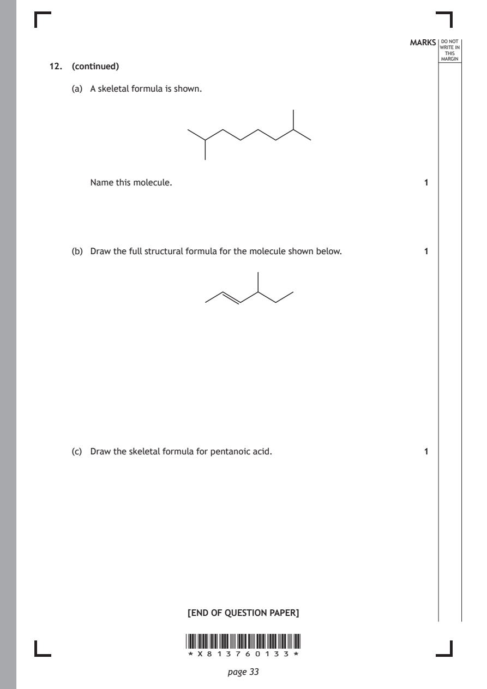
Selectable page text
MARKS _{W}^{D}_{R}^{O}_{I} _{T}^{N}OT
E IN
THIS
MARGIN
12. (continued)
(a) A skeletal formula is shown.
Name this molecule. 1
(b) Draw the full structural formula for the molecule shown below. 1
(c) Draw the skeletal formula for pentanoic acid. 1
[END OF QUESTION PAPER]
*X813760133*
page 33PDF page 34
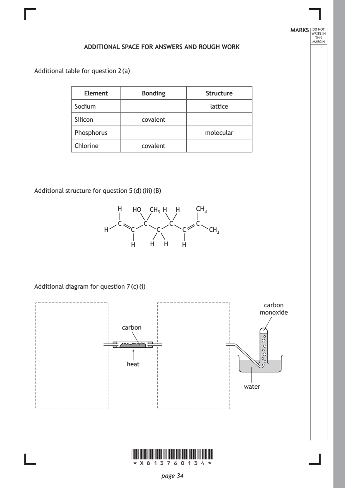
Selectable page text
MARKS _{W}^{D}_{R}^{O}_{I} _{T}^{N}OT
E IN
THIS
MARGIN
ADDITIONAL SPACE FOR ANSWERS AND ROUGH WORK
Additional table for question 2 (a)
Element Bonding Structure
Sodium lattice
Silicon covalent
Phosphorus molecular
Chlorine covalent
Additional structure for question 5 (d) (iii) (B)
CH₃
C C C C
C C C CH₃
*X813760134*
page 34
H
H H
H CH₃ H H H O
H H
Additional diagram for question 7 (c) (i)
carbon
monoxide
carbon
heat
waterPDF page 35
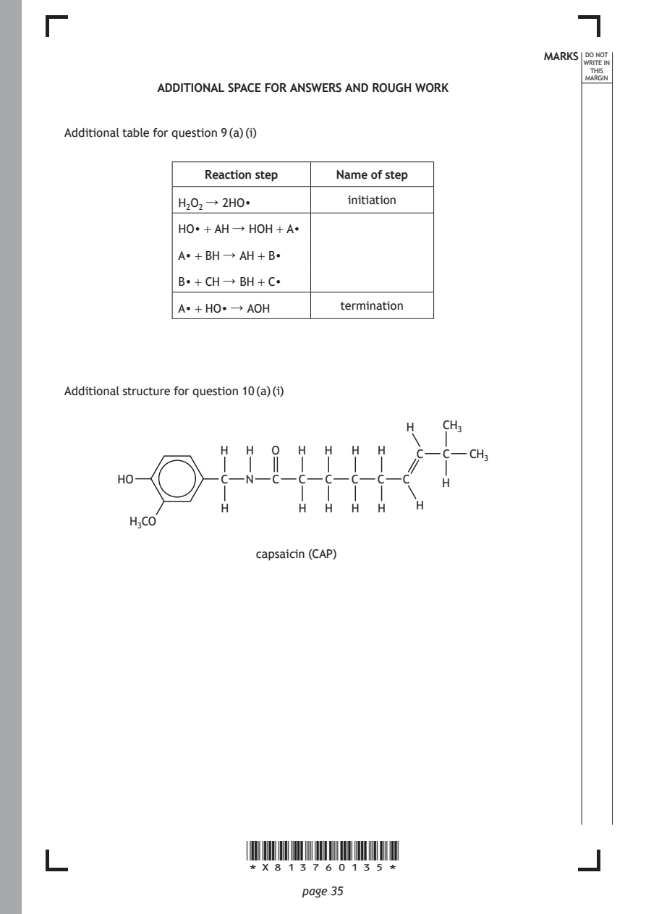
Selectable page text
MARKS _{W}^{D}_{R}^{O}_{I} _{T}^{N}OT
E IN
THIS
MARGIN
ADDITIONAL SPACE FOR ANSWERS AND ROUGH WORK
Additional table for question 9 (a) (i)
Reaction step Name of step
H₂O₂ ↓ 2HO• initiation
HO• + AH ↓ HOH + A•
A• + BH ↓ AH + B•
B• + CH ↓ BH + C•
A• + HO• ↓ AOH termination
Additional structure for question 10 (a) (i)
H CH₃
H H O H H H H
C C CH₃
HO C N C C C C C C
H
H H H H H H
H₃CO
capsaicin (CAP)
*X813760135*
page 35PDF page 36
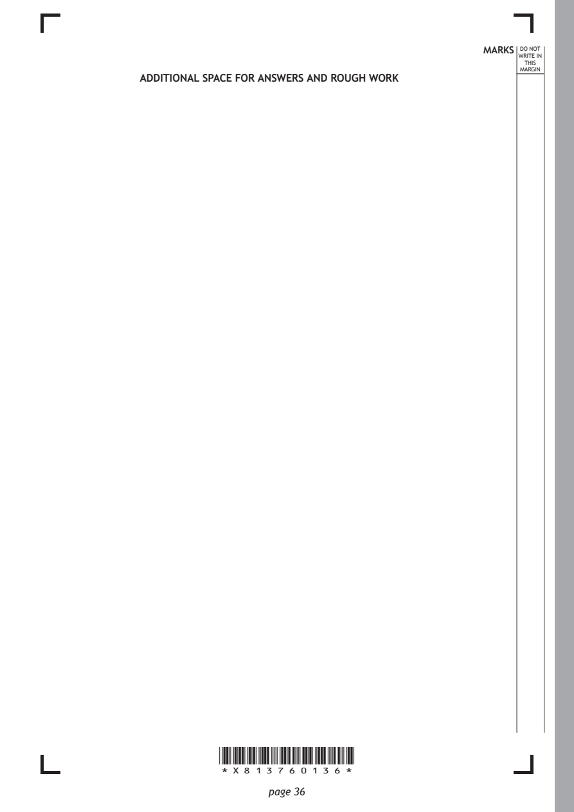
Selectable page text
MARKS _{W}^{D}_{R}^{O}_{I} _{T}^{N}OT
E IN
THIS
MARGIN
ADDITIONAL SPACE FOR ANSWERS AND ROUGH WORK
*X813760136*
page 36PDF page 37
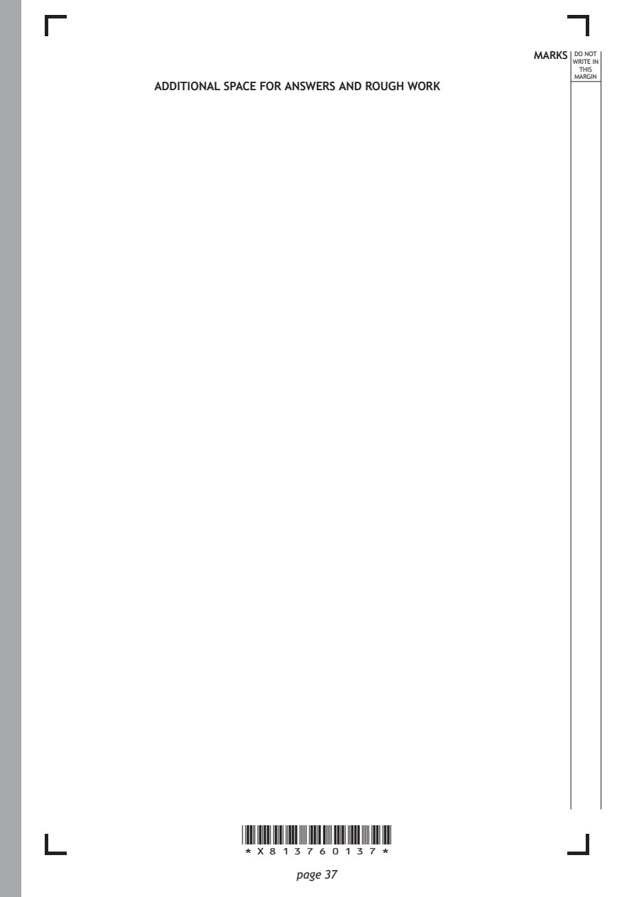
Selectable page text
MARKS _{W}^{D}_{R}^{O}_{I} _{T}^{N}OT
E IN
THIS
MARGIN
ADDITIONAL SPACE FOR ANSWERS AND ROUGH WORK
*X813760137*
page 37PDF page 38
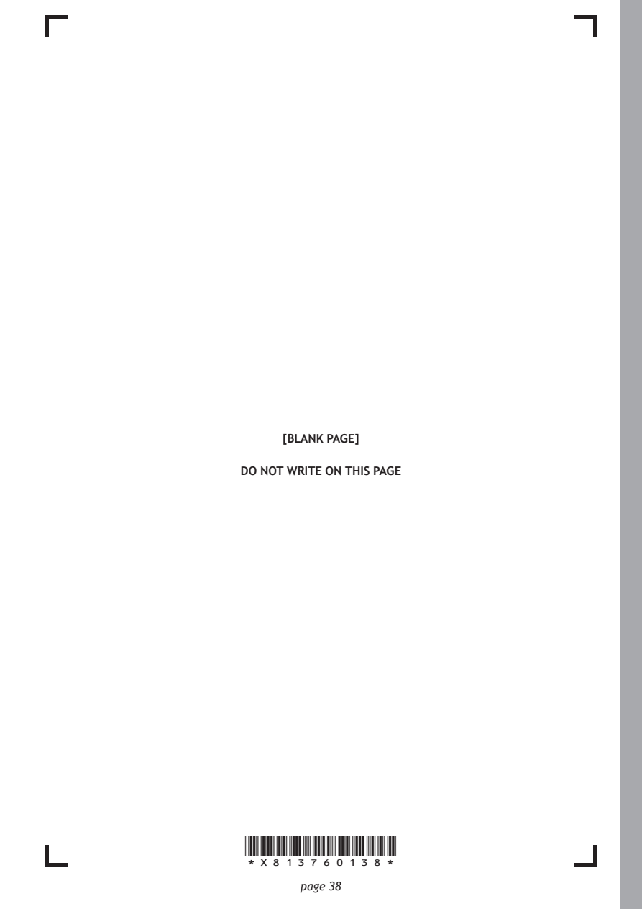
Selectable page text
[BLANK PAGE]
DO NOT WRITE ON THIS PAGE
*X813760138*
page 38PDF page 39
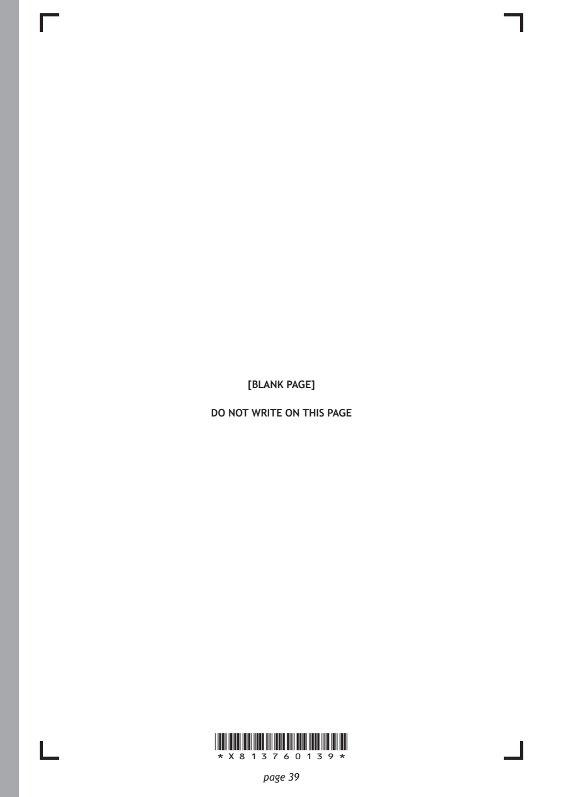
Selectable page text
[BLANK PAGE]
DO NOT WRITE ON THIS PAGE
*X813760139*
page 39PDF page 40
Selectable page text
[BLANK PAGE]
DO NOT WRITE ON THIS PAGE
*X813760140*
page 40